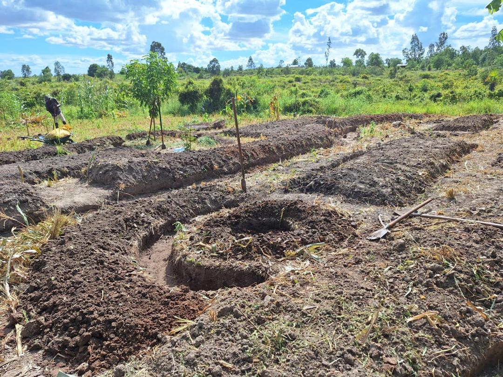
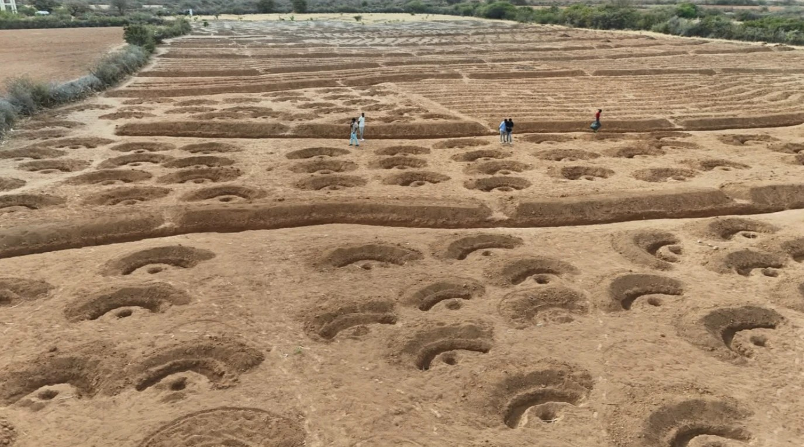
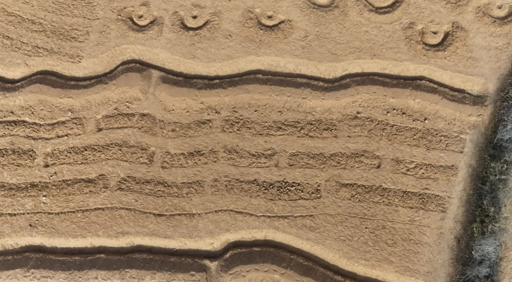
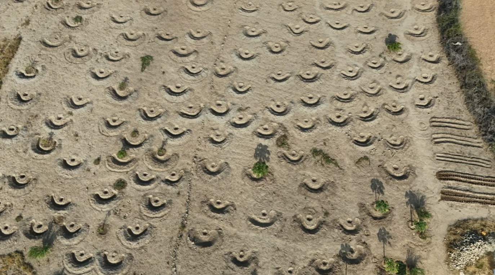

Our Work in Action
Gallery
A glimpse of our restoration work, community events, and environmental campaigns in the field.





Deegansan is an environment and ecosystem advocate working at the intersection of rangeland restoration, soil & water conservation, and climate action — turning local actions into lasting global impact.
Deegansan is an environment and ecosystem advocate — a restoration organization dedicated to rangeland recovery, soil & water conservation, and the community programs that make lasting ecological change possible.
We believe that sustainable change begins at the local level. By empowering communities to understand, protect, and restore their natural environments, we create ripples of impact that extend far beyond borders.
To restore degraded rangelands and ecosystems through awareness, community engagement, and science-based restoration practices.
A world where thriving ecosystems sustain communities, biodiversity, and climate resilience for generations to come.
Local action, global thinking — combining traditional ecological knowledge with modern conservation science.
As an environment and ecosystem advocate, Deegansan addresses the root causes of degradation while building community resilience across four thematic areas.
Rehabilitating degraded rangelands through reseeding, soil conservation, and rotational grazing management practices that restore biodiversity and community livelihoods.
Ecosystem RestorationBuilding community capacity to protect watersheds, prevent erosion, and implement sustainable water harvesting techniques in vulnerable landscapes.
ConservationConducting workshops, campaigns, and educational events that connect communities to environmental issues and inspire meaningful local action for global change.
EducationEngaging policymakers and communities on climate adaptation strategies, amplifying voices most affected by changing weather patterns and environmental instability.
AdvocacyBuilding grassroots networks of environmental champions who lead conservation activities, monitor ecosystems, and report on restoration progress in their regions.
CommunityDocumenting ecosystem health indicators, tracking restoration outcomes, and generating evidence to guide adaptive management and policy recommendations.
ScienceAs an environment and ecosystem advocate, Deegansan marks the global observance days that speak directly to our work — turning global awareness into field action, community dialogue, and policy advocacy.
Every observance is a chance to turn awareness into action. Join a field event, host a dialogue in your community, or support the campaign behind the next World Day on our calendar.
Field reports, announcements, and publications from our work — posted here as they're ready, with documents available to download.
Practical courses built on our field experience in rangeland restoration, soil & water conservation, and community-based climate adaptation.
Tell us which course you'd like to take — we'll follow up with dates, cost, and how to get started.
A glimpse of our restoration work, community events, and environmental campaigns in the field.




Your contribution directly funds rangeland restoration, community education, and environmental advocacy that transforms landscapes and lives.
Donate NowMake an immediate difference with a single contribution to restoration efforts
Sustain long-term programs with regular support that planners can count on
Sponsor a specific area of rangeland restoration and receive progress reports
Join our field teams, awareness campaigns, or share your expertise remotely
Reach out for partnerships, volunteer opportunities, media inquiries, or to learn more about our work.
Baidoa, Somalia
Serving communities across the Horn of Africa
info@deegansan.org
partnerships@deegansan.org
+252 61 888 0388
@deegansan on Twitter, Facebook & Instagram